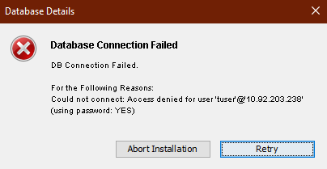

You are here: Hostname/Port changes for Tomcat Application Server
FAQs and Troubleshooting
This section lists the troubleshooting tips to resolve problems that you may encounter during installation.
-
Issue: If you have upgraded from Foundry V8.x or lower versions to V9 GA or higher versions, some of the services fail to work because of an internal authentication error. These services, such as the Foundry Admin Adapter, Email Adapter, and Workflow Email services, fail with the following error:
{ returned HTTP [400], Response Body [{"details":{"message":"Could not find trust security group for given envId","errcode":0,"errmsg":"Could not find trust security group for given envId"},"httpstatus":"Bad Request","requestid":"5e36d604-09ab-4fbb-9437-42c1d828140f;98","domain":"AUTH","code":-65,"mfcode":"Auth-65","message":"Some of the input parameters provided are invalid"}] }Workaround
To avoid the error, you must perform the following:
- Log in to Foundry Console which you upgraded for V9.x.
- In your Volt MX Foundry account, click Environments. The Environments page appears.
-
Click MODIFY for the environment. The Modify Environment page appears, shown below:
-
In the Modify Environment page, click SAVE.
-
Issue: While upgrading from Foundry 7.3 to Volt MX Foundry V9 and then upgrading to a version after V9, the upgrade fails due to the following error:"java.sql.SQLSyntaxErrorException: Table 'prefixidglobaldbsuffix.schema_version' doesn't exist".
Workaround
To avoid this issue, perform the following step:
- Delete the idglobaldb schema before upgrading to the version later than V9.
-
Issue
The upgrade installation from v8.2.1.3 to v9.x rolls back.
Workaround
Before the upgrade, execute the following SQL statement from admin database:
For MySQL
------------
delete from.schema_version where script = 'V62.1__voltmxadmin-mysql-8.2.0.0.sql'; For SQLServer
---------------
delete from.schema_version where script = 'V62.1__voltmxadmin-sqlserver-8.2.0.0.sql'; For Oracle
----------
delete from.schema_version where script = 'V62.1__voltmxadmin-oracle-8.2.0.0.sql'; -
Issue
If you upgrade the integration service or install on new server using the existing database but with a different server details like fully qualified URL port, and when you publish an app, the app publish fails.
Workaround
You must update management server details in the
server_configurationtable in admin database. -
How to change the Hostname/IP address and port details of the existing Volt MX Foundry Server.
After the installation of Volt MX Foundry, if you want to change the existing Hostname/IP address that was used during the installation of Volt MX Foundry, follow these steps:
- Go to your Volt MX Foundry install folder.
- Go to
scriptsfolder - for example,<MFinstallfolder>/scripts. Thescriptsfolder contains a .sql file for the database type that you selected while installing Volt MX Foundry. -
Open the
.sqlfile in a text editor.Important: If you want to access Volt MX Foundry Console with a new port, change the value for the
NEW_PORTwith the new value. Otherwise, assign the value of theOLD_PORTto theNEW_PORTvariable.Important: If you want to access Volt MX Foundry Console with a hostname/IP address, change the value for the
NEW_HOSTwith the new value. Otherwise, assign the value of theOLD_HOSTto theNEW_HOSTvariable. -
Change the values for the following variables.
- For MySQL, MariaDB, DB2, and SQL Server, replace the values for the
NEW_HOSTand theNEW_PORTwith new values. - For Oracle, replace all the occurrences of the
NEW_HOSTand theNEW_PORTwith new values.
Important: If you have selected your database as DB2, follow the steps provided in the .sql file in the
<MFinstallfolder>/scriptsfolder. - For MySQL, MariaDB, DB2, and SQL Server, replace the values for the
-
Run the SQL script on the database where you have installed Volt MX Foundry.
-
Issue
If the
java.sql. BatchUpdateException: Prepared statement needs to be re-preparederror is logged in the Identity service logs or if certain operations fail to work properly when an identity service is invoked, do the following.Workaround
Add the following server variable in MariaDB ini file located in the MariaDB installation folder.
table_open_cache=64Path for MariaDB ini file,
<USER_INSTALL_DIR>\MariaDB 10.1\data\my.ini -
Issue
If you face the error dialogue "
Windows error 2 occurred while loading the Java VM" while launching the Volt MX Foundry Patch Installer, because of the following:Volt MX Foundry Patch Installer runs with your system's default Java. If an user machine has Java 8 installed, then check if the machine's
System Environment Path for JavaorJAVA_HOMEis set toc:\programdata\oracle\java\javapathWorkaround
- Remove the current path from
JAVA_HOMEand set the new path asC:\Program Files (x86)\Java\jre1.8.0_40\bin - Launch the Volt MX Foundry Patch Installer.
- After the installation completed, reset the machine's
System Environment Path for JavaorJAVA_HOMEpath to it's original path. For examplec:\programdata\oracle\java\javapath
- Remove the current path from
-
Issue
If your service provider's certificate is not configured, the system displays an error - "peer not authenticated."
Workaround
For trusted certification issues, refer to SSL Certificate Issues.
-
Issue - When you publish a number of apps, the system throws the error - too many open files.
For example:
Workaround
Update some of the default kernel parameter settings in your Linux environment. For more details, refer to Tuning File Descriptor Limits on Linux
-
Issue
When customer wants to install Volt MX Foundry with Oracle as database type, the system throws the error:
Invalid Data Type SDO_GEOMENTRYWorkaround
Install Oracle locator, which is required for Volt MX Foundry installation. For more details, refer to Pre-installation Tasks > Create Locator Component for Oracle Database
-
Issue
Upgrading from Foundry 6.5.2, 7.0.1 or 7.1.1 with MS SQL Server fails. Installer is rolling back, as the schema version table is not migrating properly while upgrade.
Workaround
To avoid this issue, follow these step:
Remove the
version_rankcolumn fromschema_versiontable in each schema by following queries before upgrade.{ drop index schema_version_vr_idx on master.<SCHEMA_NAME>.schema_version; alter table master.<SCHEMA_NAME>.schema_version drop column version_rank; } -
Issue
Auth (VoltMX Identity Service) datasources are not created when upgraded from Foundry 6.5.2.GA to 7.2.GA.
Workaround
Create datasource for
authconfigdbandauthglobaldb. For more details, refer to Configuring_JNDI_for_Database > Data Source for Single Node and Multinode > VoltMX Identity Service Data Source section. -
Issue
If you have installed Foundry 7.3 or older, and when you use the existing database for Volt MX Foundry V8 on JBoss, the Web Application publish fails.
Workaround
Update themanagement_server_portin theserver_configurationtable ofadmindbwith thejboss.management.http.portin the<USER_INSTALL_DIR>\jboss\standalone\configuration\standalone.xml. -
Issue
If you do not want to use a DB user with DBA role or Equivalent privileges for the Volt MX Foundry installation on ORACLE database, follow these steps:
Workaround
Manual Steps:
-
Create Component Users (schema) with the required grants as below.
``` { CREATE USER
MFCONSOLEDB identified by default tablespace profile default; ALTER USER
MFCONSOLEDB QUOTA UNLIMITED ON USERS; GRANT CONNECT,RESOURCE,CREATE VIEW TO
MFCONSOLEDB ; GRANT CREATE JOB TO
MFCONSOLEDB ; GRANT MANAGE SCHEDULER TO
MFCONSOLEDB ; CREATE USER
MFACCOUNTSDB identified by default tablespace profile default; ALTER USER
MFACCOUNTSDB QUOTA UNLIMITED ON USERS; GRANT CONNECT,RESOURCE,CREATE VIEW TO
MFACCOUNTSDB ; GRANT CREATE JOB TO
MFACCOUNTSDB ; GRANT MANAGE SCHEDULER TO
MFACCOUNTSDB ; CREATE USER
MFREPORTSDB identified by default tablespace profile default; ALTER USER
MFREPORTSDB QUOTA UNLIMITED ON USERS; GRANT CONNECT,RESOURCE,CREATE VIEW TO
MFREPORTSDB ; GRANT CREATE JOB TO
MFREPORTSDB ; GRANT MANAGE SCHEDULER TO
MFREPORTSDB ; CREATE USER
IDCONFIGDB identified by default tablespace profile default; ALTER USER
IDCONFIGDB QUOTA UNLIMITED ON USERS; GRANT CONNECT,RESOURCE,CREATE VIEW TO
IDCONFIGDB ; GRANT CREATE JOB TO
IDCONFIGDB ; GRANT MANAGE SCHEDULER TO
IDCONFIGDB ; GRANT CREATE TABLE TO
IDCONFIGDB ; GRANT CREATE ANY INDEX TO
IDCONFIGDB ; GRANT ALTER ANY TABLE TO
IDCONFIGDB ; CREATE USER
ADMINDB identified by default tablespace profile default; ALTER USER
ADMINDB QUOTA UNLIMITED ON USERS; GRANT CONNECT,RESOURCE,CREATE VIEW TO
ADMINDB ; GRANT CREATE JOB TO
ADMINDB ; GRANT MANAGE SCHEDULER TO
ADMINDB ; CREATE USER
VPNSDB identified by default tablespace profile default; ALTER USER
VPNSDB QUOTA UNLIMITED ON USERS; GRANT CONNECT,RESOURCE,CREATE VIEW TO
VPNSDB ; GRANT CREATE JOB TO
VPNSDB ; GRANT MANAGE SCHEDULER TO
VPNSDB ; } ```
-
Create a non DBA user with the below grants. This user will be given to the Installer.
{ CREATE USER <INSTALLER\_USER> IDENTIFIED BY <password>; GRANT CREATE SESSION TO <INSTALLER\_USER> WITH ADMIN OPTION; GRANT SELECT ANY DICTIONARY TO <INSTALLER\_USER>; ALTER USER <INSTALLER\_USER> QUOTA UNLIMITED ON <dataTablespace>; ALTER USER <INSTALLER\_USER> QUOTA UNLIMITED ON <indexTablespace>; ALTER USER <INSTALLER\_USER> QUOTA UNLIMITED ON <lobTablespace>; }
Note: The password for the component users and the installer user have to be same.
-
-
Issue
For storage services to work, change the following storagedb entries in the admindb.
Workaround
Manual Steps:
``` {
storage_database_type - oracle
storage_database_hostname - Database hostname/IP
storage_database_port - Database Port
storage_database_username - DBA username
storage_database_password - DBA Password
storage_database_instance - service ID/service name
storage_data_tablespace - Data Tablespace name
storage_index_tablespace - Index Tablespace name
storage_lob_tablespace - Lob Tablespace name } ```` -
Issue
If you do not want to use a DB user with DBA role or Equivalent privileges for the Volt MX Foundry installation on MSSQL, follow these steps:
Workaround
Manual Steps:
Create database <prefix>mfreportsdb<suffix>; Create database <prefix>mfaccountsdb<suffix>; Create database <prefix>mfconsoledb<suffix>; Create database <prefix>admindb<suffix>; Create database <prefix>vpnsdb<suffix>; Create database <prefix>idconfigdb<suffix>; CREATE LOGIN loginId WITH PASSWORD = 'loginpwd' GO use msdb GO create user userId from LOGIN loginId; GO EXEC sp\_addrolemember 'SQLAgentUserRole', 'userId' EXEC sp\_addrolemember 'SQLAgentReaderRole', 'userId' EXEC sp\_addrolemember 'SQLAgentOperatorRole', 'userId' GO use <prefix>mfreportsdbAN<suffix> GO create user userId from LOGIN loginId; GO GRANT ALTER ANY DATABASE DDL TRIGGER TO userId GO GRANT CREATE TABLE,CREATE TYPE,CREATE PROCEDURE,SELECT,UPDATE,DELETE,INSERT,EXECUTE,REFERENCES,CREATE VIEW,ALTER,VIEW Definition TO userId GO use <prefix>mfaccountsdb<suffix> GO create user userId from LOGIN loginId; GO GRANT ALTER ANY DATABASE DDL TRIGGER TO userId GO GRANT CREATE TABLE,CREATE TYPE,CREATE PROCEDURE,SELECT,UPDATE,DELETE,INSERT,EXECUTE,REFERENCES,CREATE VIEW,ALTER,VIEW Definition TO userId GO use <prefix>mfconsoledb<suffix> GO create user userId from LOGIN loginId; GO GRANT ALTER ANY DATABASE DDL TRIGGER TO userId GO GRANT CREATE TABLE,CREATE TYPE,CREATE PROCEDURE,SELECT,UPDATE,DELETE,INSERT,EXECUTE,REFERENCES,CREATE VIEW,ALTER,VIEW Definition TO userId GO use <prefix>admindb<suffix> GO create user userId from LOGIN loginId; GO GRANT CREATE TABLE,CREATE TYPE,CREATE PROCEDURE,SELECT,UPDATE,DELETE,INSERT,EXECUTE,REFERENCES,CREATE VIEW,ALTER TO userId GO use <prefix>vpnsdb<suffix> GO CREATE SCHEMA <prefix>vpnsdb<suffix>; GO create user userId from LOGIN loginId; GO GRANT CREATE TABLE,CREATE TYPE,CREATE PROCEDURE,SELECT,UPDATE,DELETE,INSERT,EXECUTE,REFERENCES,CREATE VIEW,ALTER TO userId GO use <prefix>idconfigdb<suffix> GO create user userId from LOGIN loginId; GO GRANT CREATE TABLE,CREATE TYPE,CREATE PROCEDURE,SELECT,UPDATE,DELETE,INSERT,EXECUTE,REFERENCES,CREATE VIEW,ALTER TO userId GONote: The whole script must be run at once.
Note: The loginId and password must be the same as used for Volt MX Foundry Installation.
Note: The
and provided must be the same across the script and must also be provided at the time of the Volt MX foundry Installation. Note: You can use the same loginId and userId to avoid confusion.
Note: The userId must be same across the script.
-
Issue
If you do not want to use a DB user with DBA role or Equivalent privileges for the Volt MX Foundry installation on IBMDB2, follow these steps:
Workaround
Manual Steps:
Important: Only DB2 database administrator (DBA) or equivalent DB user will have access to a create database.
-
Create a user based on your Operating System level.
- Refer for linux: Creating group and user IDs for a DB2 database installation (Linux and UNIX)
- Refer for Windows: Creating a dedicated DB2 user (Windows)
- Create databases by logging as Admin with following queries:
``` {
CREATE SCHEMA <prefix>ADMINDB<suffix> AUTHORIZATION userid CREATE SCHEMA <prefix>MFCONSOLEDB<suffix> AUTHORIZATION userid CREATE SCHEMA <prefix>MFACCOUNTSDB<suffix> AUTHORIZATION userid CREATE SCHEMA <prefix>MFREPORTSDB<suffix> AUTHORIZATION userid CREATE SCHEMA <prefix>VPNSDB<suffix> AUTHORIZATION userid CREATE SCHEMA <prefix>IDCONFIGDB<suffix> AUTHORIZATION userid} ```
-
Grant database level permissions to the user:
``` {
GRANT CREATEIN,ALTERIN,DROPIN ON SCHEMAADMINDB TO userid;
GRANT CREATEIN,ALTERIN,DROPIN ON SCHEMAMFCONSOLEDB<suffix TO userid;
GRANT CREATEIN,ALTERIN,DROPIN ON SCHEMAMFACCOUNTSDB TO userid;
GRANT CREATEIN,ALTERIN,DROPIN ON SCHEMAMFREPORTSDB TO userid;
GRANT CREATEIN,ALTERIN,DROPIN ON SCHEMAVPNSDB TO userid; GRANT CREATEIN,ALTERIN,DROPIN ON SCHEMA <prefix>IDCONFIGDB<suffix> TO userid;} ```
-
Grant schema level permissions to the user:
{ GRANT createtab,CONNECT,DATAACCESS,IMPLICIT\_SCHEMA,ACCESSCTRL ON database TO USER userid; }
Note: The loginId and password must be the same as used for Volt MX Foundry Installation.
Note: The
and provided must be the same across the script and must also be provided at the time of the Volt MX foundry Installation. -
-
Issue
After entering Database details the DB connection fails with the following error:

WorkaroundThe password used for the Database must not contain exclamation marks (!).
-
Issue
If you are using any lower versions of MySQL 5.7 such as v5.7.12 or lower during installation, you may encounter an error due to which the installation rolls back. This error occurs due to a bug in the MySQL database.
For more information, refer MySQL BugsFollowing are the error details:
- Error: Migration V810_27_01__DeleteDuplicateAcsUserIdProviderGuidRowsAddUniqueConstraint.sql failed
- SQL State: HY000
- Error Code: 1093
- Error Message: You can't specify target table 'users' for update in FROM clause
- Location: Location where the installation is done
Workaround
To resolve this issue, refer Prerequisites for Volt MX Foundry with MySQL- Applicable for Identity Services.
Hostname/Port changes for Tomcat Application Server
Volt MX Foundry On-Premises Installer provides a script to change the Hostname or Port of the installed Volt MX Foundry instance. In your installed Tomcat Application Server, you must also perform the following changes:
In //tomcat/webapps/apiportal/WEB-INF/classes/config.properties, replace the existing URL with the new URL in the following fields:
VOLTMX_ACCOUNT_API_BASE_URL=VOLTMX_DEVELOPER_PORTAL_BASE_URL=
In //tomcat/webapps/mfconsole/WEB-INF/classes/config.properties, replace the existing URL with the new URL in the VOLTMX_ACCOUNT_API_BASE_URL= field.
In //tomcat/conf/server.xml, replace the port number with the new port number in the <Connector server="VoltMX" port= field.
In //tomcat/webapps/accounts/WEB-INF/classes/accounts.properties, replace the port number with the new port number in the following fields:
VOLTMX_INTEGRATION_SERVICE_PORT=VOLTMX_MESSAGING_SERVICE_PORT=
Hostname/Port changes for JBoss Application Server
Volt MX Foundry On-Premises Installer provides a script to change the Hostname or Port of the installed Volt MX Foundry instance. The script can be found in the installation folder. In your installed JBoss Application Server, you must follow the instructions in the script and also perform the following steps:
- In the standalone.xml file replace the IP address/port number with the new IPaddress/port number.
- In
mfconsole.war\WEB-INF\classes\config.properties, replace the existing URL with the new URL in theVOLTMX_ACCOUNT_API_BASE_URL=field. - In
apiportal.war\WEB-INF\classes\config.properties, replace the existing URL with the new URL in the following fields:VOLTMX_ACCOUNT_API_BASE_URL=VOLTMX_DEVELOPER_PORTAL_BASE_URL=
- In
accounts.war\WEB-INF\classes\accounts.properties, replace the port number with the new port number in theVOLTMX_INTEGRATION_SERVICE_PORT=field.
How to Configure JBoss Cluster
- Refer to https://access.redhat.com/solutions/218053 to setup EAP in Domain mode.
- Refer to https://docs.jboss.org/mod_cluster/1.1.0.html/Quick_Start_Guide.html to configure the mod_cluster.
- Refer to https://access.redhat.com/solutions/2332111 to integrate the mod_cluster with JBoss.
Configuring Heap and PermGen Size for Tomcat
By default, the heap settings for Tomcat allocated are Min -Xms1024m / Max - Xmx2048m, and default permgen settings are: -XX:PermSize=1024m -XX:MaxPermSize=1024m
For better performance in case of several publishes, update the following heap and permgen settings in the file: {Installation directory}/tomcat/bin/catalina.sh
-
heap settings: Min -
Xms1024m/ Max -Xmx1024m.Important: While installing Volt MX Foundry Components including Integration services, set the heap settings to: Min -Xms2048m / Max - Xmx2048m.
-
permgen settings : -XX:PermSize=
1024m-XX:MaxPermSize=2048m
Configuring Heap and PermGen Size for JBoss
In case of multinode, do the following:
- Configure the Min -
Xms2048m/ Max -Xmx4096mheap settings in the file:{ Server directory }/domain/configuration/host.xml - Configure the Min -
Xms2048m/ Max -Xmx4096mheap settings in the file:{ Server directory }/domain/configuration/domain.xml - Configure permgen settings : -XX:PermSize=
1024m-XX:MaxPermSize=2048m
In case of single node, configure the settings in <Install directory>/jboss/standalone/configuration/standalone.xml
How to Configure Volt MX Foundry Behind a Reverse Proxy
If you want to access everything via a proxy URL, including Volt MX Foundry Console (for example, design time for your app developers) and authService, and integration services (for example, runtime from users using your apps), follow these steps:
- Install Volt MX Foundry with internal details like your internal IP and HTTP port.
-
After installation, stop the Volt MX Foundry Console (without configuring authservice details) and update following property files:
-
In the
accounts.war/WEB-INF/classesfolder, open theaccounts.propertiesfile, and update theWAAS_BASE_URL=<PUBLIC_URL_OF_YOUR_APACHE>/workspaceproperty with a public URLinstead of the private URL. By default, the private URL is set during installation.Examples of proxy URLs:
WAAS_BASE_URL=http://test.voltmx.com/workspaceWAAS_BASE_URL=https://test.voltmx.com:8443/workspaceWAAS_BASE_URL=http://test.voltmx.com:8080/workspace- Following are the changes to be made in the war for each App Server:
- Tomcat:In
mfconsole.war/WEB-INF/classes, open theconfig.propertiesfile, and update theVOLTMX_ACCOUNT_API_BASE_URL=<PUBLIC_URL_OF_YOUR_APACHE>/accounts/api/v1_0/property with a public URLinstead of the private URL that was generated during installation. - JBoss - Standalone (Bundled JBoss): In
Standalone/deployments/mfconsole.war, open theconfig.propertiesfile, and update theVOLTMX_ACCOUNT_API_BASE_URL=<PUBLIC_URL_OF_YOUR_APACHE>/accounts/api/v1_0/property with a public URLinstead of the private URL that was generated during installation. - JBoss - Pre-configured and Domain mode: Take a backup of the existing war. Undeploy
mfconsole.war. Inmfconsole.war/WEB-INF/classes, open theconfig.propertiesfile, update theVOLTMX_ACCOUNT_API_BASE_URL=<PUBLIC_URL_OF_YOUR_APACHE>/accounts/api/v1_0/property with a public URL instead of the private URL that was generated during installation, and re-deploy the war file.
-
-
Start Volt MX Foundry Console.
- Launch your Volt MX Foundry Console in browser by using
<PUBLIC_URL_OF_YOUR_APACHE>/mfconsole. Now auth setup pages comes up. - Enter auth URL with public URL like
<PUBLIC_URL_OF_YOUR_APACHE>/authService. If you provide an internal IP here, appconfig will show internal IPs. -
Also after log in to Volt MX Foundry Console, while registering server, provide the PUBLIC_URL to register integration server. Now all the URLs will have the public hostnames.
If you want to give public access only to runtime services like authservice and integration services you can skip step 2 and step 3 from the above procedure. This will make sure service doc will have all public URLs.
Note: Proxy configuration should have preserver host directive for Volt MX Foundry to work correctly after start up.
For example, in case of apache proxy, use
`ProxyPreserveHost On`and in case of NGINX, useproxy_set_header Host $host;(For more information, refer Passing request headers)
How to Configure Frontend HTTPS to Tomcat HTTP Redirection
If you are installing Volt MX Foundry on Tomcat on HTTP and wants to route requests via HTTPS apache or loadbalancer, add a connector inthe tomcat/server.xml with the following attributes:
proxyName="
Example:
<Connector server="VoltMXTEST" port="8080" protocol="HTTP/1.1" proxyName="mbaastest10.hcl.net" proxyPort="443" scheme="https" secure="true" maxHttpHeaderSize="8192" maxThreads="150" enableLookups="false" acceptCount="25" disableUploadTimeout="true" tcpNoDelay="true" compression="on" compressableMimeType="text/css,text/javascript,text.html" connectionTimeout="20000" URIEncoding="UTF-8"/>
How to encrypt the database password
IMPORTANT: Encryption is only supported for Tomcat application servers.
Quantum Fabric provides a 256-bit AES/GCM/NoPadding encryption utility, which can be used to encrypt your database password. To encrypt your database password, follow these steps:
- Download and extract the installation zip file or tar file.
-
From the extracted folder, open a terminal (console), and then execute the following command:
java -jar EncryptionUtility.jar -
In the Enter Password to be Encrypted field, type the password that is used to access your database.
- In the Enter Key to be Encrypted field, type the key that must be used to encrypt the password.
The console then displays the Encrypted Password and Encrypted Key. These values must be typed in the Database Passwordand Encrypted Rotational Key boxes on the Database Details screen.